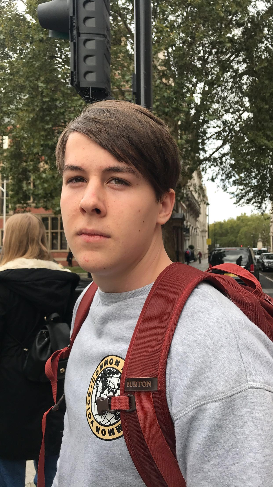

Ki vagyok én ?
Horváth Ákos vagyok a Budapesti Műszaki és Gazdaságtudományi Egyetem gépészmérnöki alapszak első éves hallgatója. Gépészmérnöki tanulmányaimat jelenleg németül végzem mivel később szeretnék Németországban is továbbtanulni.
Az egyetem mellett szabadidőmet edzéssel szoktam tölteni, aminek már kis korom óta meghatározó szerepe van az életemben. Sajnos a vírushelyzet miatt szokottnál jóval kevesebb lehetőségem van sportolni de remélem nemsokára ismét több időt tudok majd szentelni az edzésnek.
